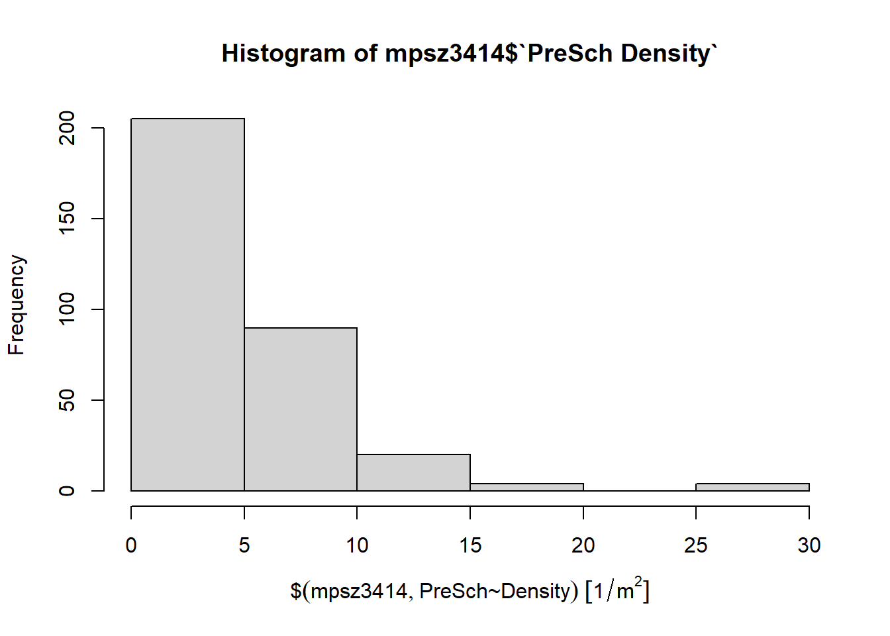

pacman::p_load(sf,tidyverse)Hands-on Exercise 1: Geospatial Data Wrangling
Overview
In this hands on exercise, I learnt how to import & wrangle geospatial data using appropriate R packages
Getting Started
The code chunk below install & load sf & tidyverse packages into the R env
What is a Projected Coordinate System
According to SLA SiReNT (2020), Geographical information systems’ data sets uses projected coordinate systems, such that common features can be incorporated into geographical data sets. A common coordinate system is the global WGS84 datum to map the spherical surface of the earth onto a 2 or 3 dimensional Cartesian coordinate plane for analysis.
The SVY21 coordinate system may be used in Singapore’s context as the datum are localized to describe the region more precisely in order to provide accurate analysis.
1.4 Importing Geospatial Data
We use st_read() to read the dataset, specifying the folder in the dsn parameter and the dataset name in the layer parameter
Master Planning Subzone dataset
mpsz = st_read(dsn="data/geospatial", layer="MP14_SUBZONE_WEB_PL")Reading layer `MP14_SUBZONE_WEB_PL' from data source
`D:\Allanckw\ISSS624\Hands-on_Ex1\data\geospatial' using driver `ESRI Shapefile'
Simple feature collection with 323 features and 15 fields
Geometry type: MULTIPOLYGON
Dimension: XY
Bounding box: xmin: 2667.538 ymin: 15748.72 xmax: 56396.44 ymax: 50256.33
Projected CRS: SVY21The output of the code shows that there are a total of 323 features & 15 fields of geometry type Multipolygon in the x and y dimensions.
The driver used is ESRI shapefile, which is a geospatial vector data format for Geographical information systems
Cycling path dataset
cyclingpath = st_read(dsn="data/geospatial", layer="CyclingPathGazette")Reading layer `CyclingPathGazette' from data source
`D:\Allanckw\ISSS624\Hands-on_Ex1\data\geospatial' using driver `ESRI Shapefile'
Simple feature collection with 2248 features and 2 fields
Geometry type: MULTILINESTRING
Dimension: XY
Bounding box: xmin: 11854.32 ymin: 28347.98 xmax: 42626.09 ymax: 48948.15
Projected CRS: SVY21The output of the code shows that there are a total of 1625 features & 2 fields of geometry type LINESTRING in the x and y dimensions.
Preschool dataset
The preschool dataset is in kml format. The difference between importing kml file and the other 2 dataset is that there is no layer information. Simply call st_read() with the filename
KML stands for Keyhole markup language., an XML notation to express geographical annotation and visualization. (ARCGIS, 2016)
preschool = st_read("data/geospatial/pre-schools-location-kml.kml")Reading layer `PRESCHOOLS_LOCATION' from data source
`D:\Allanckw\ISSS624\Hands-on_Ex1\data\geospatial\pre-schools-location-kml.kml'
using driver `KML'
Simple feature collection with 1359 features and 2 fields
Geometry type: POINT
Dimension: XYZ
Bounding box: xmin: 103.6824 ymin: 1.248403 xmax: 103.9897 ymax: 1.462134
z_range: zmin: 0 zmax: 0
Geodetic CRS: WGS 84The output of the code shows that there are a total of 1359 features & 2 fields of geometry type POINT in 3 dimensions (X, Y and Z). In this case preschool is in the WGS84 projected coordinate systems
1.5 Checking the content of a simple Feature Data Frame
st_geometry()
st_geometry returns geometries in a list, of class 'sfc'
st_geometry(mpsz)Geometry set for 323 features
Geometry type: MULTIPOLYGON
Dimension: XY
Bounding box: xmin: 2667.538 ymin: 15748.72 xmax: 56396.44 ymax: 50256.33
Projected CRS: SVY21
First 5 geometries:MULTIPOLYGON (((31495.56 30140.01, 31980.96 296...MULTIPOLYGON (((29092.28 30021.89, 29119.64 300...MULTIPOLYGON (((29932.33 29879.12, 29947.32 298...MULTIPOLYGON (((27131.28 30059.73, 27088.33 297...MULTIPOLYGON (((26451.03 30396.46, 26440.47 303...The output in the case returns the bounding box, projected coordinated systems and the first 5 geometries
glimpse()
glimpse(mpsz)Rows: 323
Columns: 16
$ OBJECTID <int> 1, 2, 3, 4, 5, 6, 7, 8, 9, 10, 11, 12, 13, 14, 15, 16, 17, …
$ SUBZONE_NO <int> 1, 1, 3, 8, 3, 7, 9, 2, 13, 7, 12, 6, 1, 5, 1, 1, 3, 2, 2, …
$ SUBZONE_N <chr> "MARINA SOUTH", "PEARL'S HILL", "BOAT QUAY", "HENDERSON HIL…
$ SUBZONE_C <chr> "MSSZ01", "OTSZ01", "SRSZ03", "BMSZ08", "BMSZ03", "BMSZ07",…
$ CA_IND <chr> "Y", "Y", "Y", "N", "N", "N", "N", "Y", "N", "N", "N", "N",…
$ PLN_AREA_N <chr> "MARINA SOUTH", "OUTRAM", "SINGAPORE RIVER", "BUKIT MERAH",…
$ PLN_AREA_C <chr> "MS", "OT", "SR", "BM", "BM", "BM", "BM", "SR", "QT", "QT",…
$ REGION_N <chr> "CENTRAL REGION", "CENTRAL REGION", "CENTRAL REGION", "CENT…
$ REGION_C <chr> "CR", "CR", "CR", "CR", "CR", "CR", "CR", "CR", "CR", "CR",…
$ INC_CRC <chr> "5ED7EB253F99252E", "8C7149B9EB32EEFC", "C35FEFF02B13E0E5",…
$ FMEL_UPD_D <date> 2014-12-05, 2014-12-05, 2014-12-05, 2014-12-05, 2014-12-05…
$ X_ADDR <dbl> 31595.84, 28679.06, 29654.96, 26782.83, 26201.96, 25358.82,…
$ Y_ADDR <dbl> 29220.19, 29782.05, 29974.66, 29933.77, 30005.70, 29991.38,…
$ SHAPE_Leng <dbl> 5267.381, 3506.107, 1740.926, 3313.625, 2825.594, 4428.913,…
$ SHAPE_Area <dbl> 1630379.27, 559816.25, 160807.50, 595428.89, 387429.44, 103…
$ geometry <MULTIPOLYGON [m]> MULTIPOLYGON (((31495.56 30..., MULTIPOLYGON (…glimpse() displays each field’s data type, for example double precision number for X_ADDR, Y_ADDR, SHAPE_Leng, SHAPE_AREA and their corresponding available values in the dataset.
head()
head() reveals the complete information of a feature object
head(mpsz, n=5)Simple feature collection with 5 features and 15 fields
Geometry type: MULTIPOLYGON
Dimension: XY
Bounding box: xmin: 25867.68 ymin: 28369.47 xmax: 32362.39 ymax: 30435.54
Projected CRS: SVY21
OBJECTID SUBZONE_NO SUBZONE_N SUBZONE_C CA_IND PLN_AREA_N
1 1 1 MARINA SOUTH MSSZ01 Y MARINA SOUTH
2 2 1 PEARL'S HILL OTSZ01 Y OUTRAM
3 3 3 BOAT QUAY SRSZ03 Y SINGAPORE RIVER
4 4 8 HENDERSON HILL BMSZ08 N BUKIT MERAH
5 5 3 REDHILL BMSZ03 N BUKIT MERAH
PLN_AREA_C REGION_N REGION_C INC_CRC FMEL_UPD_D X_ADDR
1 MS CENTRAL REGION CR 5ED7EB253F99252E 2014-12-05 31595.84
2 OT CENTRAL REGION CR 8C7149B9EB32EEFC 2014-12-05 28679.06
3 SR CENTRAL REGION CR C35FEFF02B13E0E5 2014-12-05 29654.96
4 BM CENTRAL REGION CR 3775D82C5DDBEFBD 2014-12-05 26782.83
5 BM CENTRAL REGION CR 85D9ABEF0A40678F 2014-12-05 26201.96
Y_ADDR SHAPE_Leng SHAPE_Area geometry
1 29220.19 5267.381 1630379.3 MULTIPOLYGON (((31495.56 30...
2 29782.05 3506.107 559816.2 MULTIPOLYGON (((29092.28 30...
3 29974.66 1740.926 160807.5 MULTIPOLYGON (((29932.33 29...
4 29933.77 3313.625 595428.9 MULTIPOLYGON (((27131.28 30...
5 30005.70 2825.594 387429.4 MULTIPOLYGON (((26451.03 30...1.6 Plotting the Geospatial Data with Plot()
We can use plot() of R to plot the geographical objects.
plot(mpsz)Warning: plotting the first 9 out of 15 attributes; use max.plot = 15 to plot
all
We could call st_geometry() from within plot() to only display the geometry of the sf object
plot(st_geometry(mpsz))
In addition, we can choose the plot the sf object by using a specific attribute like how we reference a dictionary in major programming languages with objname["<attributename>"]
plot(mpsz["PLN_AREA_N"])
1.7 Working with projection
Assigning EPSG Code to a simple feature data frame
The EPSG, or European Petroleum Survey Group, is a company that manages a database of geodetic parameters with standardized codes for coordinate systems, datums, spheroids, units.
Sometimes, importing geospatial data into R may not give an accurate analysis as the projected coordinate system is either missing or incorrect during the import system. We could use st_crs()to retrieve the coordinate system from the object.
st_crs(mpsz)Coordinate Reference System:
User input: SVY21
wkt:
PROJCRS["SVY21",
BASEGEOGCRS["SVY21[WGS84]",
DATUM["World Geodetic System 1984",
ELLIPSOID["WGS 84",6378137,298.257223563,
LENGTHUNIT["metre",1]],
ID["EPSG",6326]],
PRIMEM["Greenwich",0,
ANGLEUNIT["Degree",0.0174532925199433]]],
CONVERSION["unnamed",
METHOD["Transverse Mercator",
ID["EPSG",9807]],
PARAMETER["Latitude of natural origin",1.36666666666667,
ANGLEUNIT["Degree",0.0174532925199433],
ID["EPSG",8801]],
PARAMETER["Longitude of natural origin",103.833333333333,
ANGLEUNIT["Degree",0.0174532925199433],
ID["EPSG",8802]],
PARAMETER["Scale factor at natural origin",1,
SCALEUNIT["unity",1],
ID["EPSG",8805]],
PARAMETER["False easting",28001.642,
LENGTHUNIT["metre",1],
ID["EPSG",8806]],
PARAMETER["False northing",38744.572,
LENGTHUNIT["metre",1],
ID["EPSG",8807]]],
CS[Cartesian,2],
AXIS["(E)",east,
ORDER[1],
LENGTHUNIT["metre",1,
ID["EPSG",9001]]],
AXIS["(N)",north,
ORDER[2],
LENGTHUNIT["metre",1,
ID["EPSG",9001]]]]The result shows that the EPSG Code is 9001, which is incorrect. The correct code for the SVY21 projected coordinate system is 3414. We could use st_set_crs() to correct the EPSG Code.
mpsz3414 = st_set_crs(mpsz,3414)Warning: st_crs<- : replacing crs does not reproject data; use st_transform for
thatst_crs(mpsz3414)Coordinate Reference System:
User input: EPSG:3414
wkt:
PROJCRS["SVY21 / Singapore TM",
BASEGEOGCRS["SVY21",
DATUM["SVY21",
ELLIPSOID["WGS 84",6378137,298.257223563,
LENGTHUNIT["metre",1]]],
PRIMEM["Greenwich",0,
ANGLEUNIT["degree",0.0174532925199433]],
ID["EPSG",4757]],
CONVERSION["Singapore Transverse Mercator",
METHOD["Transverse Mercator",
ID["EPSG",9807]],
PARAMETER["Latitude of natural origin",1.36666666666667,
ANGLEUNIT["degree",0.0174532925199433],
ID["EPSG",8801]],
PARAMETER["Longitude of natural origin",103.833333333333,
ANGLEUNIT["degree",0.0174532925199433],
ID["EPSG",8802]],
PARAMETER["Scale factor at natural origin",1,
SCALEUNIT["unity",1],
ID["EPSG",8805]],
PARAMETER["False easting",28001.642,
LENGTHUNIT["metre",1],
ID["EPSG",8806]],
PARAMETER["False northing",38744.572,
LENGTHUNIT["metre",1],
ID["EPSG",8807]]],
CS[Cartesian,2],
AXIS["northing (N)",north,
ORDER[1],
LENGTHUNIT["metre",1]],
AXIS["easting (E)",east,
ORDER[2],
LENGTHUNIT["metre",1]],
USAGE[
SCOPE["Cadastre, engineering survey, topographic mapping."],
AREA["Singapore - onshore and offshore."],
BBOX[1.13,103.59,1.47,104.07]],
ID["EPSG",3414]]Reprojection
We can see that the variable mpsz3414 has the EPSG code corrected after running st_set_crs()
We could however see that it returns a warning that it does not reproject data, and is asked to use st_transform()
Reprojection is the process to update the coordinates values of a dataset from one coordinate system to another coordinate system, in this case from EPSG 9001 to EPSG 3414 for the mpsz dataset.
Below is the code to transform the preschool dataset to the SVY21 (EPSG 3414) projected coordinate system
preschool3414 = st_transform(preschool, crs=3414)
st_crs(preschool3414)Coordinate Reference System:
User input: EPSG:3414
wkt:
PROJCRS["SVY21 / Singapore TM",
BASEGEOGCRS["SVY21",
DATUM["SVY21",
ELLIPSOID["WGS 84",6378137,298.257223563,
LENGTHUNIT["metre",1]]],
PRIMEM["Greenwich",0,
ANGLEUNIT["degree",0.0174532925199433]],
ID["EPSG",4757]],
CONVERSION["Singapore Transverse Mercator",
METHOD["Transverse Mercator",
ID["EPSG",9807]],
PARAMETER["Latitude of natural origin",1.36666666666667,
ANGLEUNIT["degree",0.0174532925199433],
ID["EPSG",8801]],
PARAMETER["Longitude of natural origin",103.833333333333,
ANGLEUNIT["degree",0.0174532925199433],
ID["EPSG",8802]],
PARAMETER["Scale factor at natural origin",1,
SCALEUNIT["unity",1],
ID["EPSG",8805]],
PARAMETER["False easting",28001.642,
LENGTHUNIT["metre",1],
ID["EPSG",8806]],
PARAMETER["False northing",38744.572,
LENGTHUNIT["metre",1],
ID["EPSG",8807]]],
CS[Cartesian,2],
AXIS["northing (N)",north,
ORDER[1],
LENGTHUNIT["metre",1]],
AXIS["easting (E)",east,
ORDER[2],
LENGTHUNIT["metre",1]],
USAGE[
SCOPE["Cadastre, engineering survey, topographic mapping."],
AREA["Singapore - onshore and offshore."],
BBOX[1.13,103.59,1.47,104.07]],
ID["EPSG",3414]]1.8 Importing & Converting Aspatial Data
ASpatial data is a dataset that contains x and y coordinates of locations’ data points. In this example, the Inside AirBnB dataset is used.
Importing Aspatial data
As listings is in csv format, we could use read_csv() of readr package to import the dataset
airbnb_listing = read_csv("data/aspatial/listings.csv")Rows: 4252 Columns: 16
── Column specification ────────────────────────────────────────────────────────
Delimiter: ","
chr (5): name, host_name, neighbourhood_group, neighbourhood, room_type
dbl (10): id, host_id, latitude, longitude, price, minimum_nights, number_o...
date (1): last_review
ℹ Use `spec()` to retrieve the full column specification for this data.
ℹ Specify the column types or set `show_col_types = FALSE` to quiet this message.We can use list() to display the dataset, it shows that there are 4252 rows and 16 columns, and we are interested in the longitude and latitude values
list(airbnb_listing)[[1]]
# A tibble: 4,252 × 16
id name host_id host_…¹ neigh…² neigh…³ latit…⁴ longi…⁵ room_…⁶ price
<dbl> <chr> <dbl> <chr> <chr> <chr> <dbl> <dbl> <chr> <dbl>
1 50646 Pleasan… 227796 Sujatha Centra… Bukit … 1.33 104. Privat… 80
2 71609 Ensuite… 367042 Belinda East R… Tampin… 1.35 104. Privat… 178
3 71896 B&B Ro… 367042 Belinda East R… Tampin… 1.35 104. Privat… 81
4 71903 Room 2-… 367042 Belinda East R… Tampin… 1.35 104. Privat… 81
5 275343 Conveni… 1439258 Joyce Centra… Bukit … 1.29 104. Privat… 52
6 275344 15 mins… 1439258 Joyce Centra… Bukit … 1.29 104. Privat… 40
7 294281 5 mins … 1521514 Elizab… Centra… Newton 1.31 104. Privat… 72
8 301247 Nice ro… 1552002 Rahul Centra… Geylang 1.32 104. Privat… 41
9 324945 20 Mins… 1439258 Joyce Centra… Bukit … 1.29 104. Privat… 49
10 330089 Accomo@… 1439258 Joyce Centra… Bukit … 1.29 104. Privat… 49
# … with 4,242 more rows, 6 more variables: minimum_nights <dbl>,
# number_of_reviews <dbl>, last_review <date>, reviews_per_month <dbl>,
# calculated_host_listings_count <dbl>, availability_365 <dbl>, and
# abbreviated variable names ¹host_name, ²neighbourhood_group,
# ³neighbourhood, ⁴latitude, ⁵longitude, ⁶room_typeCreating a feature dataframe from an Aspatial data frame with st_as_sf()
We can use st_as_sfto create a dataframe from the longitude (x) and latitude (y) values. The EPSG 4326 code is used as the dataset is referencing WGS84 geographic coordinate system
airbnb_listings_sf = st_as_sf(airbnb_listing, coords = c("longitude", "latitude"), crs=4326)We can then use glimpse() to displays each field’s data type & available values.
The results shows that the longitude and latitude values have been converted to a geometry object consisting of the longitude and latitude values as points, with both columns now dropped.
glimpse(airbnb_listings_sf)Rows: 4,252
Columns: 15
$ id <dbl> 50646, 71609, 71896, 71903, 275343, 275…
$ name <chr> "Pleasant Room along Bukit Timah", "Ens…
$ host_id <dbl> 227796, 367042, 367042, 367042, 1439258…
$ host_name <chr> "Sujatha", "Belinda", "Belinda", "Belin…
$ neighbourhood_group <chr> "Central Region", "East Region", "East …
$ neighbourhood <chr> "Bukit Timah", "Tampines", "Tampines", …
$ room_type <chr> "Private room", "Private room", "Privat…
$ price <dbl> 80, 178, 81, 81, 52, 40, 72, 41, 49, 49…
$ minimum_nights <dbl> 90, 90, 90, 90, 14, 14, 90, 8, 14, 14, …
$ number_of_reviews <dbl> 18, 20, 24, 48, 20, 13, 133, 105, 14, 1…
$ last_review <date> 2014-07-08, 2019-12-28, 2014-12-10, 20…
$ reviews_per_month <dbl> 0.22, 0.28, 0.33, 0.67, 0.20, 0.16, 1.2…
$ calculated_host_listings_count <dbl> 1, 4, 4, 4, 50, 50, 7, 1, 50, 50, 50, 4…
$ availability_365 <dbl> 365, 365, 365, 365, 353, 364, 365, 90, …
$ geometry <POINT [°]> POINT (103.7852 1.33432), POINT (…1.9 Geoprocessing with sf package
st_buffer()
Using st_buffer() to compute the 5m buffers around cycling path
buffer_cycling = st_buffer(cyclingpath,
dist=5, nQuadSegs = 30)nQuadSegs is the number of segments per quadrant for all or per feature, the higher the number, the smoother are the curves of the buffer. Setting nQuadSeg to 1 yields straight lines with jagged edges (Pebesma, n.d)
st_area()
The area of the buffer is computed by using st_area()
buffer_cycling$AREA <- st_area(buffer_cycling)Finally, we use sum() to compute the total land area
sum(buffer_cycling$AREA)1556978 [m^2]st_intersects()
We can use st_intersects() to find common data points between 2 geographical datasets. The length() function is used to find the number of points in the intersection.
In this case we want to identify pre-schools located inside each Planning Subzones
mpsz3414$'PreSch Count'<- lengths(st_intersects(mpsz3414, preschool3414))Using the summary function, we can find the summary statistics of the numbers of preschools of the various planning zones
summary(mpsz3414$'PreSch Count') Min. 1st Qu. Median Mean 3rd Qu. Max.
0.000 0.000 2.000 4.207 6.000 37.000 The top_n function can be used to find the planning zones with the most pre-schools
top_n(mpsz3414, 1, 'PreSch Count')Simple feature collection with 323 features and 16 fields
Geometry type: MULTIPOLYGON
Dimension: XY
Bounding box: xmin: 2667.538 ymin: 15748.72 xmax: 56396.44 ymax: 50256.33
Projected CRS: SVY21 / Singapore TM
First 10 features:
OBJECTID SUBZONE_NO SUBZONE_N SUBZONE_C CA_IND PLN_AREA_N
1 1 1 MARINA SOUTH MSSZ01 Y MARINA SOUTH
2 2 1 PEARL'S HILL OTSZ01 Y OUTRAM
3 3 3 BOAT QUAY SRSZ03 Y SINGAPORE RIVER
4 4 8 HENDERSON HILL BMSZ08 N BUKIT MERAH
5 5 3 REDHILL BMSZ03 N BUKIT MERAH
6 6 7 ALEXANDRA HILL BMSZ07 N BUKIT MERAH
7 7 9 BUKIT HO SWEE BMSZ09 N BUKIT MERAH
8 8 2 CLARKE QUAY SRSZ02 Y SINGAPORE RIVER
9 9 13 PASIR PANJANG 1 QTSZ13 N QUEENSTOWN
10 10 7 QUEENSWAY QTSZ07 N QUEENSTOWN
PLN_AREA_C REGION_N REGION_C INC_CRC FMEL_UPD_D X_ADDR
1 MS CENTRAL REGION CR 5ED7EB253F99252E 2014-12-05 31595.84
2 OT CENTRAL REGION CR 8C7149B9EB32EEFC 2014-12-05 28679.06
3 SR CENTRAL REGION CR C35FEFF02B13E0E5 2014-12-05 29654.96
4 BM CENTRAL REGION CR 3775D82C5DDBEFBD 2014-12-05 26782.83
5 BM CENTRAL REGION CR 85D9ABEF0A40678F 2014-12-05 26201.96
6 BM CENTRAL REGION CR 9D286521EF5E3B59 2014-12-05 25358.82
7 BM CENTRAL REGION CR 7839A8577144EFE2 2014-12-05 27680.06
8 SR CENTRAL REGION CR 48661DC0FBA09F7A 2014-12-05 29253.21
9 QT CENTRAL REGION CR 1F721290C421BFAB 2014-12-05 22077.34
10 QT CENTRAL REGION CR 3580D2AFFBEE914C 2014-12-05 24168.31
Y_ADDR SHAPE_Leng SHAPE_Area geometry PreSch Count
1 29220.19 5267.381 1630379.3 MULTIPOLYGON (((31495.56 30... 0
2 29782.05 3506.107 559816.2 MULTIPOLYGON (((29092.28 30... 5
3 29974.66 1740.926 160807.5 MULTIPOLYGON (((29932.33 29... 0
4 29933.77 3313.625 595428.9 MULTIPOLYGON (((27131.28 30... 2
5 30005.70 2825.594 387429.4 MULTIPOLYGON (((26451.03 30... 1
6 29991.38 4428.913 1030378.8 MULTIPOLYGON (((25899.7 297... 10
7 30230.86 3275.312 551732.0 MULTIPOLYGON (((27746.95 30... 4
8 30222.86 2208.619 290184.7 MULTIPOLYGON (((29351.26 29... 4
9 29893.78 6571.323 1084792.3 MULTIPOLYGON (((20996.49 30... 3
10 30104.18 3454.239 631644.3 MULTIPOLYGON (((24472.11 29... 1Computing Density
Density can be computed by first computing the area of each planning subzone.
mpsz3414$Area <- mpsz3414 %>% st_area()the mutate() function of dplyr package is then called to compute the density
mpsz3414 <- mpsz3414 %>%
mutate(`PreSch Density` = `PreSch Count`/Area * 1000000)1.10 Exploratory Data Analysis (EDA)
Using ggplot2() to plot graphs
Histogram
The Hist() function of R Graphics can be used to output the histogram to display the distribution of PreSch Density.
hist(mpsz3414$`PreSch Density`)
However, it is not meaningful with the default labels. ggplot2 can be used to enhanced the quality of data visualization.
ggplot(data=mpsz3414,
aes(x= as.numeric(`PreSch Density`)))+
geom_histogram(bins=20,
color="White",
fill="Blue") +
labs(title = "Are pre-school evenly distributed in Singapore?",
subtitle= "There are many planning sub-zones with a single pre-school, on the other hand, \nthere are two planning sub-zones with at least 20 pre-schools",
x = "Pre-school density (per km sq)",
y = "Frequency")Scatterplot
We can use ggplot and geom_point() to plot scatter diagram
ggplot(data=mpsz3414,
aes(x= as.numeric(`PreSch Density`), y=as.numeric(`PreSch Count`))) +
geom_point(shape=18, color="blue") +
xlim(0,40) + ylim(0,40) +
labs(title="Relationship between Pre-school density & Pre-school count", x="Pre-School Density (per km sq)", y="Pre-school count")Reference:
ARCGIS (2016), What is KML
https://desktop.arcgis.com/en/arcmap/10.3/manage-data/kml/what-is-kml-.htm
Singapore Land Authority (SLA), Singapore Satellite Positioning Reference Network (SiReNT), 2020, Plane Coordinate System - SVY21
https://app.sla.gov.sg/sirent/About/PlaneCoordinateSystem
E. Pebesma (n.d) Geometric unary operations on simple feature geometry sets
https://r-spatial.github.io/sf/reference/geos_unary.html
Virtual Surveyor (2022), What is an EPSG Code
https://support.virtual-surveyor.com/en/support/solutions/articles/1000261353-what-is-an-epsg-code-#:~:text=EPSG%20stands%20for%20European%20Petroleum,spheroids%2C%20units%20and%20such%20alike.